Mac_subclusters
Sophie.Alice
2026-07-27
Last updated: 2026-08-11
Checks: 7 0
Knit directory: MT_Project/
This reproducible R Markdown analysis was created with workflowr (version 1.7.2). The Checks tab describes the reproducibility checks that were applied when the results were created. The Past versions tab lists the development history.
Great! Since the R Markdown file has been committed to the Git repository, you know the exact version of the code that produced these results.
Great job! The global environment was empty. Objects defined in the global environment can affect the analysis in your R Markdown file in unknown ways. For reproduciblity it’s best to always run the code in an empty environment.
The command set.seed(20260612) was run prior to running
the code in the R Markdown file. Setting a seed ensures that any results
that rely on randomness, e.g. subsampling or permutations, are
reproducible.
Great job! Recording the operating system, R version, and package versions is critical for reproducibility.
Nice! There were no cached chunks for this analysis, so you can be confident that you successfully produced the results during this run.
Great job! Using relative paths to the files within your workflowr project makes it easier to run your code on other machines.
Great! You are using Git for version control. Tracking code development and connecting the code version to the results is critical for reproducibility.
The results in this page were generated with repository version 1c9a426. See the Past versions tab to see a history of the changes made to the R Markdown and HTML files.
Note that you need to be careful to ensure that all relevant files for
the analysis have been committed to Git prior to generating the results
(you can use wflow_publish or
wflow_git_commit). workflowr only checks the R Markdown
file, but you know if there are other scripts or data files that it
depends on. Below is the status of the Git repository when the results
were generated:
Ignored files:
Ignored: .DS_Store
Ignored: .Rhistory
Ignored: .Rproj.user/
Ignored: analysis/.DS_Store
Note that any generated files, e.g. HTML, png, CSS, etc., are not included in this status report because it is ok for generated content to have uncommitted changes.
These are the previous versions of the repository in which changes were
made to the R Markdown (analysis/Mac_subclusters.Rmd) and
HTML (docs/Mac_subclusters.html) files. If you’ve
configured a remote Git repository (see ?wflow_git_remote),
click on the hyperlinks in the table below to view the files as they
were in that past version.
| File | Version | Author | Date | Message |
|---|---|---|---|---|
| Rmd | 1c9a426 | Sophie.Alice | 2026-08-11 | cellchat |
1 Setup
rm(list=ls())
gc() used (Mb) gc trigger (Mb) limit (Mb) max used (Mb)
Ncells 907360 48.5 1751614 93.6 NA 1321031 70.6
Vcells 1597090 12.2 8388608 64.0 16384 2393518 18.3library(readr)
library(dplyr)
library(ggplot2)
library(Seurat)
library(hdf5r)
library(scCustomize)
library(patchwork)
library(cowplot)
library(ggrepel)
library(workflowr)
library(scDblFinder)
library(clustree)
library(harmony)
library(speckle)
library(MAST)
library(tibble)
library(EnhancedVolcano)
library(ggarchery)
library(ggtangle)
library(clusterProfiler)
library(org.Hs.eg.db)
library(GO.db)
library(DOSE)
library(fgsea)
library(forcats)
library(SCpubr)
library(assertthat)
library(UCell)
library(DT)
library(ggforce)
library(enrichplot)
library(ggrain)2 Get the Data
path <- "/Users/sophiewagner/Desktop/USZ 25:26/Gabi_Project_Setup/Laila_MT_Project/Laila_MT_Project/RDS_Files/Post_Annotation_pre.rds"
Data <- read_rds(path)
DataAn object of class Seurat
65557 features across 13386 samples within 2 assays
Active assay: RNA (38606 features, 0 variable features)
2 layers present: counts, data
1 other assay present: SCT
3 dimensional reductions calculated: pca, harmony, umapMacrophages.raw <- subset(Data, cell_type == "Macrophages")
Idents(Data) <- "orig.ident"
custom_palette <- colorRampPalette(c("#005EA8", "#6DB335", "#FFD966", "#EDAAD2", "#9F1C67"))
gradient_colors6 <- custom_palette(6)
gradient_colors4 <- custom_palette(4)3 Functions
##################################### Tables
create_table <- function(df) {
DT::datatable(
df,
extensions = 'Buttons',
options = list(
dom = 'Blfrtip',
buttons = c('copy', 'csv', 'excel', 'pdf'),
pageLength = 10,
lengthMenu = c(10, 25, 50, 100),
autoWidth = TRUE,
columnDefs = list(list(
targets = '_all',
className = 'dt-nowrap'
))
),
filter = 'top',
class = 'cell-border stripe hover nowrap'
)
}
###################################### Feature Plots
plot_features <- function(seurat_obj, features, title = NULL, subtitle = NULL, num_columns = 2) {
p <- FeaturePlot_scCustom(seurat_obj, features = features, num_columns = num_columns, pt.size = 0.1)
p <- p + patchwork::plot_annotation(
title = title,
subtitle = subtitle,
theme = ggplot2::theme(
plot.title.position = "plot",
plot.title = ggplot2::element_text(face = "bold", size = 12, hjust = 0),
plot.subtitle = ggplot2::element_text(face = "italic", size = 10, hjust = 0)
)
)
return(p)
}3.1 Inspecting Data
Data An object of class Seurat
65557 features across 13386 samples within 2 assays
Active assay: RNA (38606 features, 0 variable features)
2 layers present: counts, data
1 other assay present: SCT
3 dimensional reductions calculated: pca, harmony, umapDefaultAssay(Data)[1] "RNA"table(Data$orig.ident)
CMF_NC CMF_TGF CMFHM_NC CMFHM_TGF
2389 3388 4316 3293 table(Data$TGF_status)
NC TGF_B
6705 6681 table(Data$Macrophage_status)
No_Macrophages With_Macrophages
5777 7609 3.2 Isolating and Sub-clustering Macrophages
PC = 20
set.seed(42)
Macrophages.list <- SplitObject(Macrophages.raw, split.by = "orig.ident")
# Re-run SCTransform on the fibroblast subsets to find fibroblast-specific variance
for (i in 1:length(Macrophages.list)) {
DefaultAssay(Macrophages.list[[i]]) <- "RNA"
Macrophages.list[[i]] <- SCTransform(Macrophages.list[[i]],
vst.flavor = "v2",
vars.to.regress = "percent.mt",
return.only.var.genes = TRUE,
method = "glmGamPoi",
verbose = FALSE)
}
fib_features <- SelectIntegrationFeatures(object.list = Macrophages.list, nfeatures = 3000)
Macrophages <- merge(x = Macrophages.list[[1]], y = Macrophages.list[2:length(Macrophages.list)], merge.data = TRUE)
VariableFeatures(Macrophages) <- fib_features
MacrophagesAn object of class Seurat
57771 features across 1503 samples within 2 assays
Active assay: SCT (19165 features, 3000 variable features)
3 layers present: counts, data, scale.data
1 other assay present: RNAMacrophages <- RunPCA(Macrophages, npcs = 50, verbose = FALSE)
##################################### Elbowplot
ElbowPlot(Macrophages, ndims = 50)+
labs(
title = "Principal Component (PC) Variance Elbow Plot"
) +
geom_vline(xintercept = 20, linetype = "dashed", color = "darkred", linewidth = 0.8)+
theme_minimal(base_size = 11)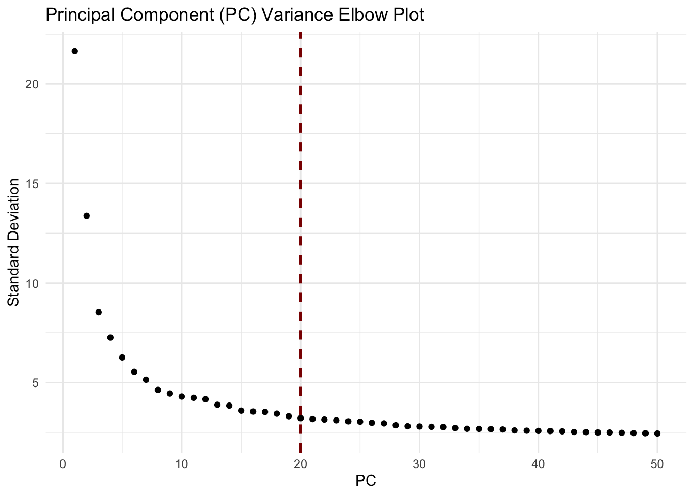
##################################### Clustering without integrations
Dims <- 20
Macrophages <- RunUMAP(Macrophages, dims = 1:Dims)11:02:42 UMAP embedding parameters a = 0.9922 b = 1.11211:02:42 Read 1503 rows and found 20 numeric columns11:02:42 Using Annoy for neighbor search, n_neighbors = 3011:02:42 Building Annoy index with metric = cosine, n_trees = 500% 10 20 30 40 50 60 70 80 90 100%[----|----|----|----|----|----|----|----|----|----|**************************************************|
11:02:42 Writing NN index file to temp file /var/folders/4w/_9gjjltx7r7__536sy6dcwbw0000gn/T//Rtmp0JeLV4/filefbd321a6ea
11:02:42 Searching Annoy index using 1 thread, search_k = 3000
11:02:43 Annoy recall = 100%
11:02:43 Commencing smooth kNN distance calibration using 1 thread with target n_neighbors = 30
11:02:44 Initializing from normalized Laplacian + noise (using RSpectra)
11:02:44 Commencing optimization for 500 epochs, with 62314 positive edges
11:02:44 Using rng type: pcg
11:02:46 Optimization finishedMacrophages <- FindNeighbors(Macrophages, dims = 1:Dims)Computing nearest neighbor graph
Computing SNNGraphs(Macrophages)[1] "SCT_nn" "SCT_snn"Macrophages <- FindClusters(Macrophages, graph.name = "SCT_snn", resolution = seq(0.1, 0.8, by=0.1))Modularity Optimizer version 1.3.0 by Ludo Waltman and Nees Jan van Eck
Number of nodes: 1503
Number of edges: 56386
Running Louvain algorithm...
Maximum modularity in 10 random starts: 0.9245
Number of communities: 2
Elapsed time: 0 seconds
Modularity Optimizer version 1.3.0 by Ludo Waltman and Nees Jan van Eck
Number of nodes: 1503
Number of edges: 56386
Running Louvain algorithm...
Maximum modularity in 10 random starts: 0.8728
Number of communities: 3
Elapsed time: 0 seconds
Modularity Optimizer version 1.3.0 by Ludo Waltman and Nees Jan van Eck
Number of nodes: 1503
Number of edges: 56386
Running Louvain algorithm...
Maximum modularity in 10 random starts: 0.8315
Number of communities: 4
Elapsed time: 0 seconds
Modularity Optimizer version 1.3.0 by Ludo Waltman and Nees Jan van Eck
Number of nodes: 1503
Number of edges: 56386
Running Louvain algorithm...
Maximum modularity in 10 random starts: 0.7959
Number of communities: 4
Elapsed time: 0 seconds
Modularity Optimizer version 1.3.0 by Ludo Waltman and Nees Jan van Eck
Number of nodes: 1503
Number of edges: 56386
Running Louvain algorithm...
Maximum modularity in 10 random starts: 0.7634
Number of communities: 5
Elapsed time: 0 seconds
Modularity Optimizer version 1.3.0 by Ludo Waltman and Nees Jan van Eck
Number of nodes: 1503
Number of edges: 56386
Running Louvain algorithm...
Maximum modularity in 10 random starts: 0.7408
Number of communities: 6
Elapsed time: 0 seconds
Modularity Optimizer version 1.3.0 by Ludo Waltman and Nees Jan van Eck
Number of nodes: 1503
Number of edges: 56386
Running Louvain algorithm...
Maximum modularity in 10 random starts: 0.7195
Number of communities: 6
Elapsed time: 0 seconds
Modularity Optimizer version 1.3.0 by Ludo Waltman and Nees Jan van Eck
Number of nodes: 1503
Number of edges: 56386
Running Louvain algorithm...
Maximum modularity in 10 random starts: 0.6992
Number of communities: 7
Elapsed time: 0 secondsclustree::clustree(Macrophages@meta.data[,grep("SCT_snn_res", colnames(Macrophages@meta.data))],
prefix = "SCT_snn_res.")+
labs(
title = "Clustree - Before integration"
) +
xlab("Cluster") +
ylab("Resolution depth") +
theme_minimal(base_size = 11)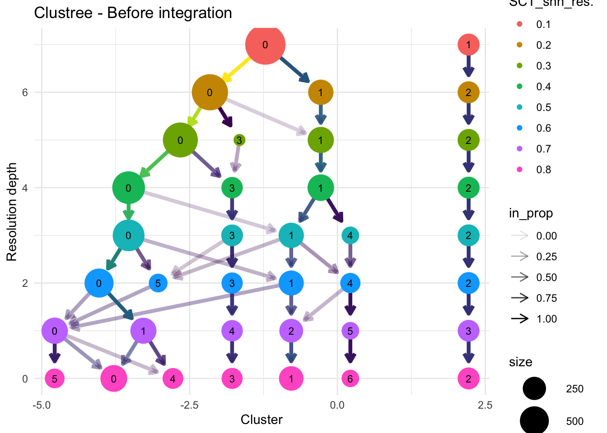
DimPlot(Macrophages, reduction = "umap", shuffle = T, group.by = "SCT_snn_res.0.1")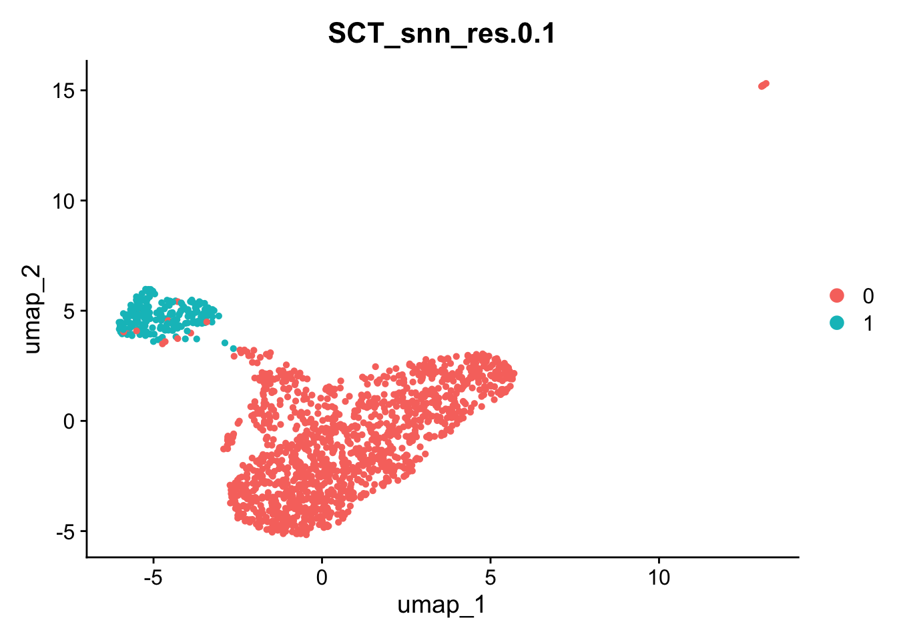
DimPlot(Macrophages, reduction = "umap", shuffle = T, group.by = "SCT_snn_res.0.2")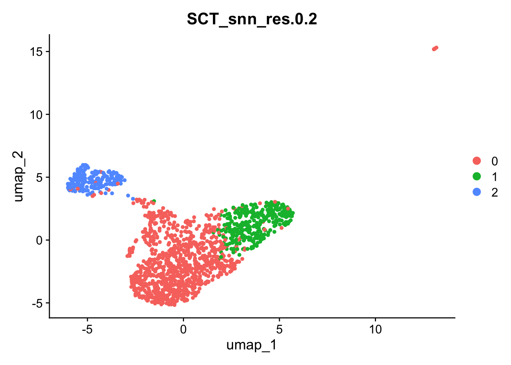
DimPlot(Macrophages, reduction = "umap", shuffle = T, group.by = "SCT_snn_res.0.3")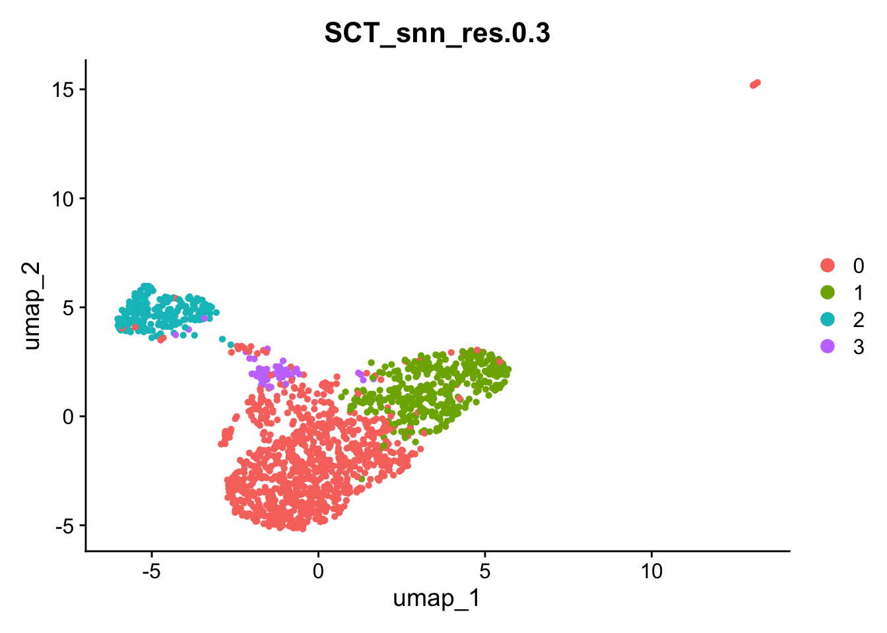
DimPlot(Macrophages, reduction = "umap", shuffle = T, group.by = "SCT_snn_res.0.4")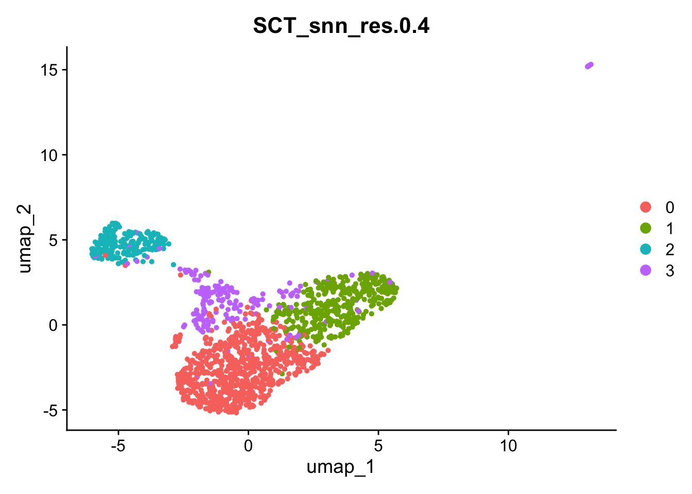
DimPlot(Macrophages, reduction = "umap", shuffle = T, group.by = "SCT_snn_res.0.5")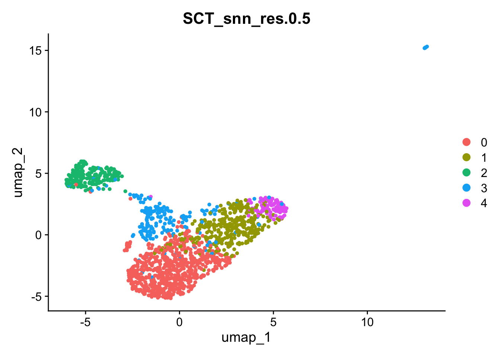
DimPlot(Macrophages, reduction = "umap", shuffle = T, group.by = "orig.ident")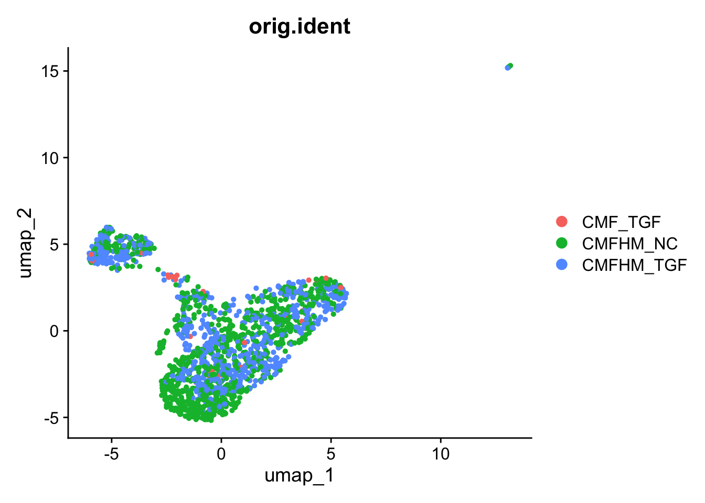
##################################### integration
# Run Harmony to integrate
Macrophages <- RunHarmony(Macrophages,
group.by.vars = "orig.ident",
dims.use = 1:Dims,
plot_convergence = TRUE,
.options = harmony_options(max.iter.cluster = 100))Transposing data matrix
Using automatic lambda estimation
Thetas: 2
Initializing state using k-means centroids initializationInitializing centroidsHarmony 1/10
Harmony 2/10
Harmony 3/10
Harmony 4/10
Harmony 5/10
Harmony converged after 5 iterations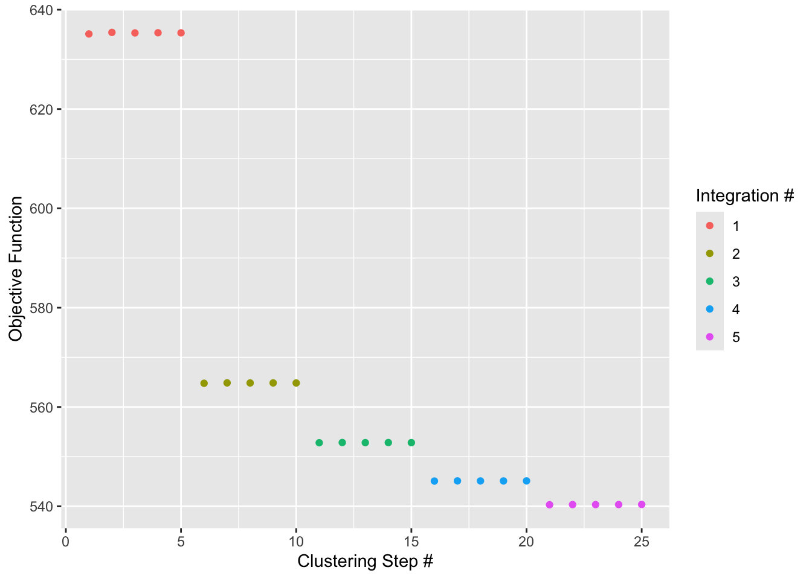
##################################### Clustering with integration
DefaultAssay(Macrophages) <- "SCT"
Macrophages <- RunUMAP(Macrophages, dims = 1:Dims, reduction = "harmony")11:02:49 UMAP embedding parameters a = 0.9922 b = 1.112
11:02:49 Read 1503 rows and found 20 numeric columns
11:02:49 Using Annoy for neighbor search, n_neighbors = 30
11:02:49 Building Annoy index with metric = cosine, n_trees = 50
0% 10 20 30 40 50 60 70 80 90 100%
[----|----|----|----|----|----|----|----|----|----|
**************************************************|
11:02:49 Writing NN index file to temp file /var/folders/4w/_9gjjltx7r7__536sy6dcwbw0000gn/T//Rtmp0JeLV4/filefbd16554e41
11:02:49 Searching Annoy index using 1 thread, search_k = 3000
11:02:49 Annoy recall = 100%
11:02:50 Commencing smooth kNN distance calibration using 1 thread with target n_neighbors = 30
11:02:50 Initializing from normalized Laplacian + noise (using RSpectra)
11:02:51 Commencing optimization for 500 epochs, with 62626 positive edges
11:02:51 Using rng type: pcg
11:02:52 Optimization finishedMacrophages <- FindNeighbors(Macrophages, dims = 1:Dims, reduction = "harmony")Computing nearest neighbor graph
Computing SNNMacrophages <- FindClusters(Macrophages, graph.name = "SCT_snn", resolution = seq(0.1, 0.8, by=0.1))Modularity Optimizer version 1.3.0 by Ludo Waltman and Nees Jan van Eck
Number of nodes: 1503
Number of edges: 59805
Running Louvain algorithm...
Maximum modularity in 10 random starts: 0.9271
Number of communities: 2
Elapsed time: 0 seconds
Modularity Optimizer version 1.3.0 by Ludo Waltman and Nees Jan van Eck
Number of nodes: 1503
Number of edges: 59805
Running Louvain algorithm...
Maximum modularity in 10 random starts: 0.8854
Number of communities: 3
Elapsed time: 0 seconds
Modularity Optimizer version 1.3.0 by Ludo Waltman and Nees Jan van Eck
Number of nodes: 1503
Number of edges: 59805
Running Louvain algorithm...
Maximum modularity in 10 random starts: 0.8459
Number of communities: 4
Elapsed time: 0 seconds
Modularity Optimizer version 1.3.0 by Ludo Waltman and Nees Jan van Eck
Number of nodes: 1503
Number of edges: 59805
Running Louvain algorithm...
Maximum modularity in 10 random starts: 0.8134
Number of communities: 5
Elapsed time: 0 seconds
Modularity Optimizer version 1.3.0 by Ludo Waltman and Nees Jan van Eck
Number of nodes: 1503
Number of edges: 59805
Running Louvain algorithm...
Maximum modularity in 10 random starts: 0.7876
Number of communities: 5
Elapsed time: 0 seconds
Modularity Optimizer version 1.3.0 by Ludo Waltman and Nees Jan van Eck
Number of nodes: 1503
Number of edges: 59805
Running Louvain algorithm...
Maximum modularity in 10 random starts: 0.7636
Number of communities: 5
Elapsed time: 0 seconds
Modularity Optimizer version 1.3.0 by Ludo Waltman and Nees Jan van Eck
Number of nodes: 1503
Number of edges: 59805
Running Louvain algorithm...
Maximum modularity in 10 random starts: 0.7419
Number of communities: 6
Elapsed time: 0 seconds
Modularity Optimizer version 1.3.0 by Ludo Waltman and Nees Jan van Eck
Number of nodes: 1503
Number of edges: 59805
Running Louvain algorithm...
Maximum modularity in 10 random starts: 0.7224
Number of communities: 6
Elapsed time: 0 secondsclustree::clustree(Macrophages@meta.data[,grep("SCT_snn_res", colnames(Macrophages@meta.data))],
prefix = "SCT_snn_res.")+
labs(
title = "Clustree - After integration"
) +
xlab("Cluster") +
ylab("Resolution depth") +
theme_minimal(base_size = 11)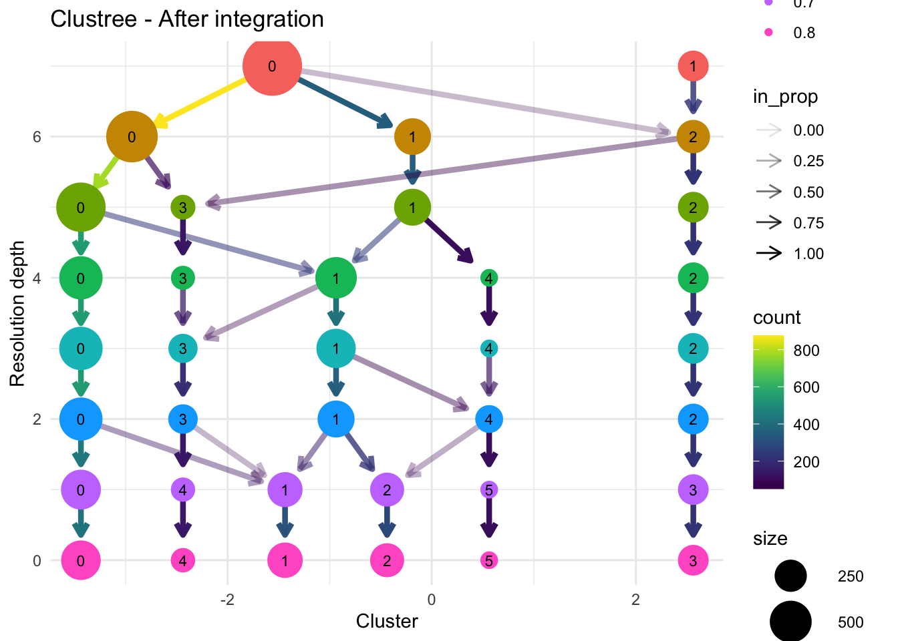
DimPlot(Macrophages, reduction = "umap", shuffle = T, group.by = "SCT_snn_res.0.1")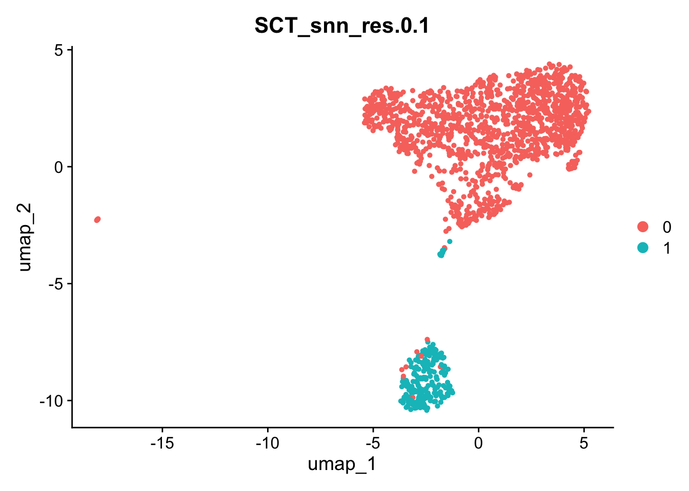
DimPlot(Macrophages, reduction = "umap", shuffle = T, group.by = "SCT_snn_res.0.2")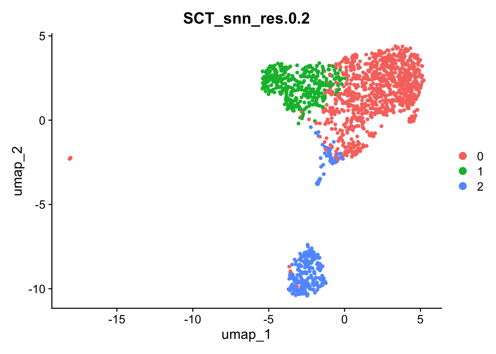
DimPlot(Macrophages, reduction = "umap", shuffle = T, group.by = "SCT_snn_res.0.3")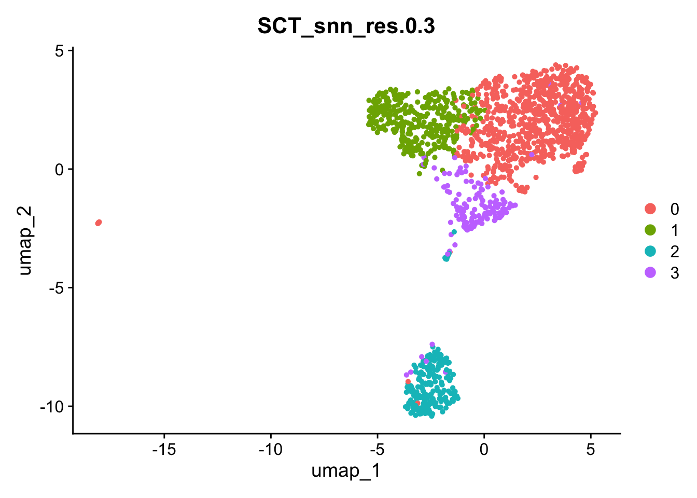
DimPlot(Macrophages, reduction = "umap", shuffle = T, group.by = "SCT_snn_res.0.4")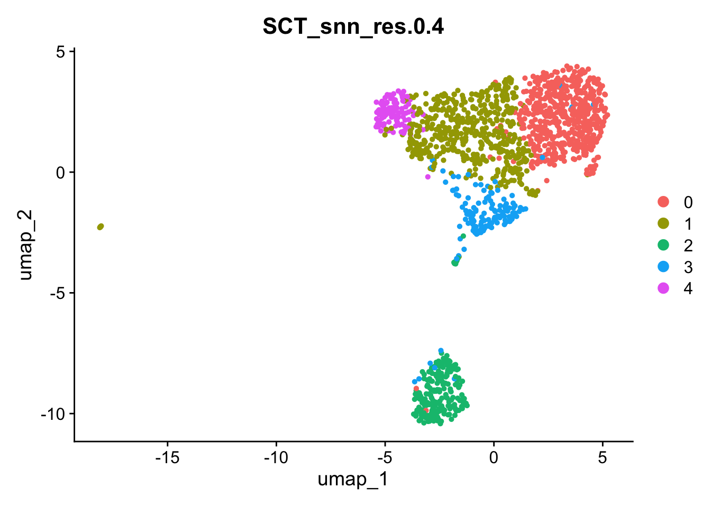
DimPlot(Macrophages, reduction = "umap", shuffle = T, group.by = "SCT_snn_res.0.5")DimPlot(Macrophages, reduction = "umap", shuffle = T, group.by = "SCT_snn_res.0.6")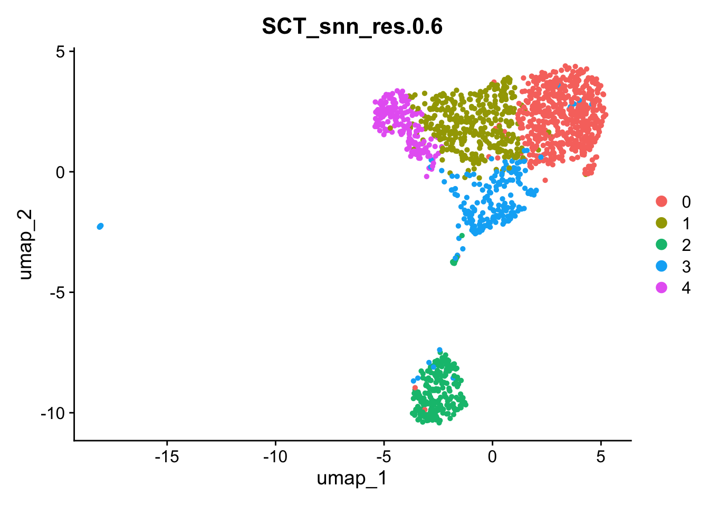
DimPlot(Macrophages, reduction = "umap", shuffle = T, group.by = "SCT_snn_res.0.8")
DimPlot(Macrophages, reduction = "umap", shuffle = T, group.by = "orig.ident")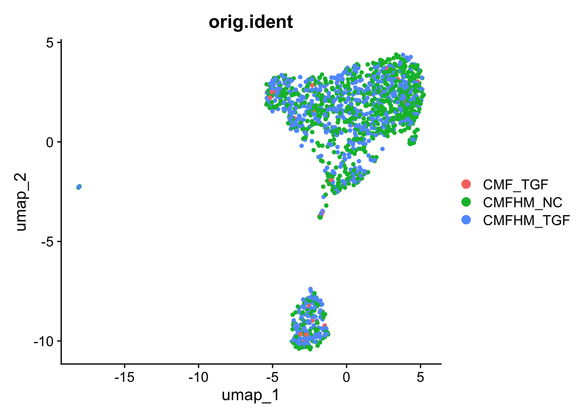
DefaultAssay(Macrophages) <- "RNA"
Idents(Macrophages) <- "SCT_snn_res.0.8"
Markers <- FindAllMarkers(Macrophages, only.pos = TRUE, min.pct = 0.5, logfc.threshold = 0.5)Calculating cluster 0For a (much!) faster implementation of the Wilcoxon Rank Sum Test,
(default method for FindMarkers) please install the presto package
--------------------------------------------
install.packages('devtools')
devtools::install_github('immunogenomics/presto')
--------------------------------------------
After installation of presto, Seurat will automatically use the more
efficient implementation (no further action necessary).
This message will be shown once per sessionCalculating cluster 1Calculating cluster 2Calculating cluster 3Calculating cluster 4Calculating cluster 5Markers_top10 <- as.data.frame(Markers %>% group_by(cluster) %>% top_n(n = 10, wt = avg_log2FC))
Markers_top3 <- as.data.frame(Markers %>% group_by(cluster) %>% top_n(n = 3, wt = avg_log2FC))
Markers_top5 <- as.data.frame(Markers %>% group_by(cluster) %>% top_n(n = 5, wt = avg_log2FC))
create_table(Markers_top10)3.3 Heatmap vis
heatmap_cols <- colorRampPalette(RColorBrewer::brewer.pal(9,"RdBu"))(256)
heatmap_cols <- rev(heatmap_cols[1:256])
Heatmap <- DoHeatmap(Macrophages, cells = colnames(Macrophages), label = FALSE, draw.line = F, features = Markers_top10$gene, assay = "SCT") +
scale_fill_gradientn(colours = heatmap_cols) +
theme(axis.text.y = element_text(size = 5)) +
theme(plot.margin = unit(c(0.1, 0, 0, 0),
"inches"))Scale for fill is already present.
Adding another scale for fill, which will replace the existing scale.Heatmap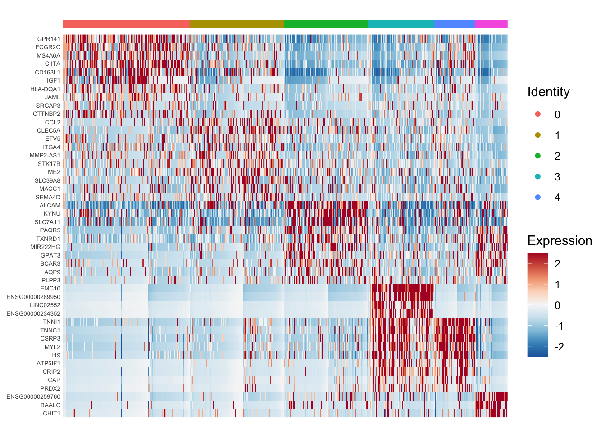
3.4 VLN vis
table(Macrophages$SCT_snn_res.0.8)
0 1 2 3 4 5
429 318 286 222 139 109 VlnPlot(Macrophages, features = c("nCount_RNA", "nFeature_RNA", "percent.mt", "percent.rp", "scDblFinder.score"), ncol = 3, pt.size = 0) + theme(axis.title.x = element_blank())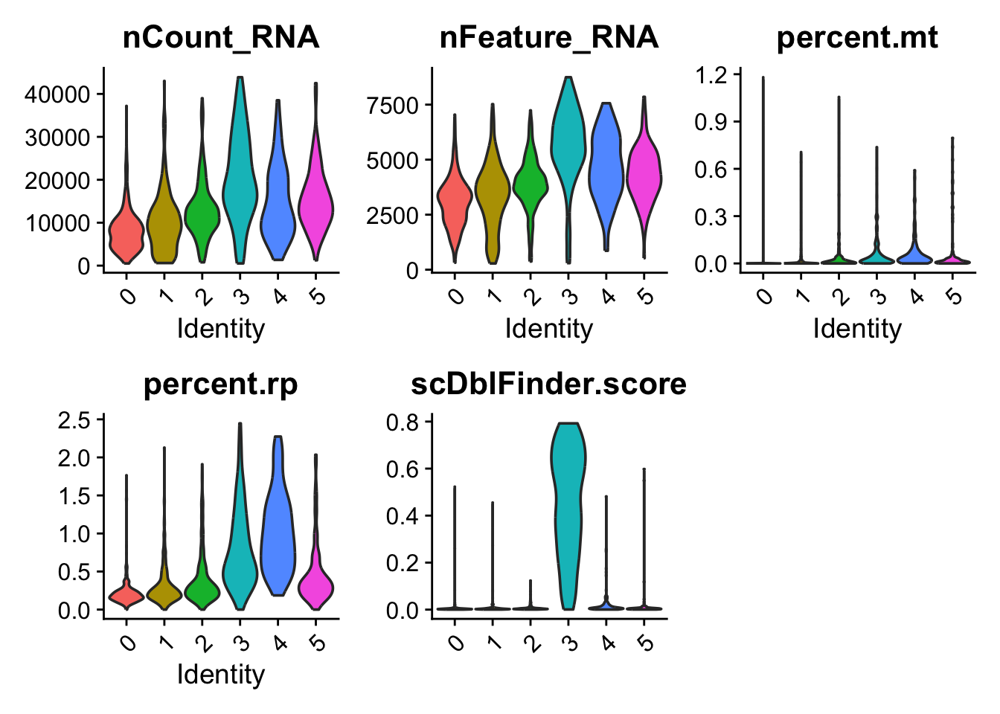
### Cehck whether the cardiomyocyte score is high in me suspected doublets
cardiomyocyte.genes <- c("TNNT2", "ACTC1", "MYH6", "MYH7", "MYL2", "NKX2-5", "RYR2", "GATA4")
cardiomyocyte.genes_signature <- list(cardiomyocyte.genes = cardiomyocyte.genes)
Macrophages <- AddModuleScore_UCell(
Macrophages,
features = cardiomyocyte.genes_signature
)
FeaturePlot_scCustom(Macrophages, features = "cardiomyocyte.genes_UCell") +
labs(
x = "",
y = "",
title = "Cardiomyocyte UCell score",
subtitle = "TNNT2 • ACTC1 • MYH6 • MYH7 • MYL2 • NKX2-5 • RYR2 • GATA4"
) +
theme(
aspect.ratio = 1.4,
axis.text.y = element_text(size = 8, hjust = 0),
axis.title = element_text(face = "bold"),
plot.title = element_text(hjust = 0, face = "bold"),
plot.subtitle = element_text(hjust = 0, size = 9, face = "italic")
)
NOTE: FeaturePlot_scCustom uses a specified `na_cutoff` when plotting to
color cells with no expression as background color separate from color scale.
Please ensure `na_cutoff` value is appropriate for feature being plotted.
Default setting is appropriate for use when plotting from 'RNA' assay.
When `na_cutoff` not appropriate (e.g., module scores) set to NULL to
plot all cells in gradient color palette.
-----This message will be shown once per session.-----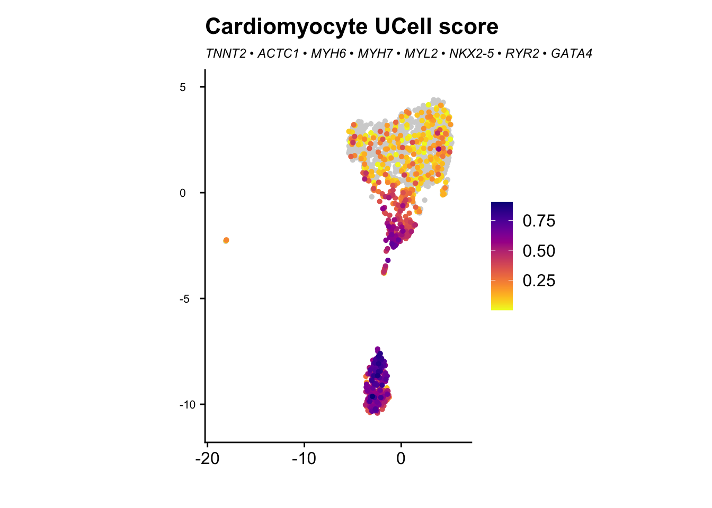
VlnPlot_scCustom(Macrophages, features = "cardiomyocyte.genes_UCell", colors_use = gradient_colors6, split.by = "orig.ident") +
labs(
x = "",
y = "",
title = "Cardiomyocyte UCell score",
subtitle = "TNNT2 • ACTC1 • MYH6 • MYH7 • MYL2 • NKX2-5 • RYR2 • GATA4"
) +
theme(
aspect.ratio = 1.4,
axis.text.y = element_text(size = 8, hjust = 0),
axis.title = element_text(face = "bold"),
plot.title = element_text(hjust = 0, face = "bold"),
plot.subtitle = element_text(hjust = 0, size = 9, face = "italic")
)The default behaviour of split.by has changed.
Separate violin plots are now plotted side-by-side.
To restore the old behaviour of a single split violin,
set split.plot = TRUE.
This message will be shown once per session.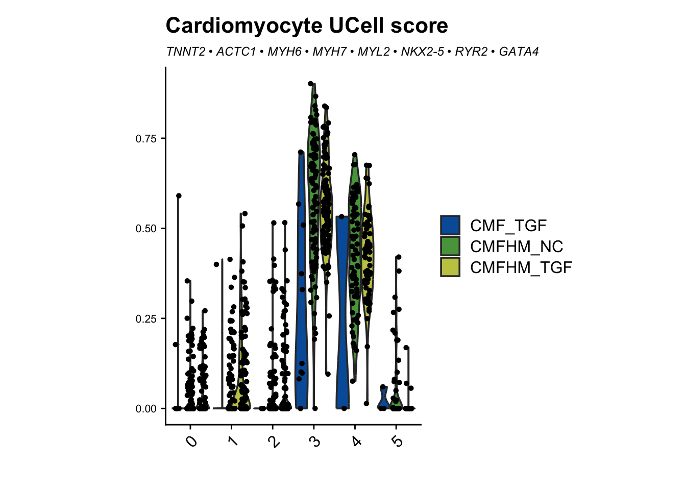
########### fibroblast genes
c.fibroblast.genes <- c("TCF21", "DDR2", "PDGFRA", "VIM", "ACTA2", "POSTN", "FAP", "COL1A1", "COL1A2", "COL3A1", "FN1")
c.fibroblast.genes_signature <- list(c.fibroblast.genes = c.fibroblast.genes)
Macrophages <- AddModuleScore_UCell(
Macrophages,
features = c.fibroblast.genes_signature
)
FeaturePlot_scCustom(Macrophages, features = "c.fibroblast.genes_UCell") +
labs(
x = "",
y = "",
title = "Cardiac Fibroblast UCell score",
subtitle = "TCF21 • DDR2 • PDGFRA • VIM • ACTA2 • POSTN • FAP • COL1A1 • COL1A2 • COL3A1 • FN1"
) +
theme(
aspect.ratio = 1.4,
axis.text.y = element_text(size = 8, hjust = 0),
axis.title = element_text(face = "bold"),
plot.title = element_text(hjust = 0, face = "bold"),
plot.subtitle = element_text(hjust = 0, size = 9, face = "italic")
)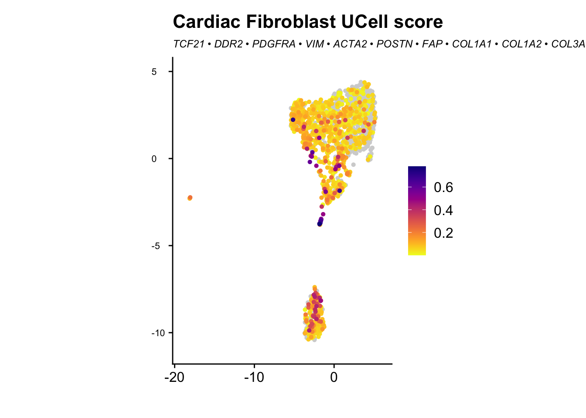
VlnPlot_scCustom(Macrophages, features = "c.fibroblast.genes_UCell", colors_use = gradient_colors6) +
labs(
x = "",
y = "",
title = "Cardiac Fibroblast UCell score",
subtitle = "TCF21 • DDR2 • PDGFRA • VIM • ACTA2 • POSTN • FAP • COL1A1 • COL1A2 • COL3A1 • FN1"
) +
theme(
aspect.ratio = 1.4,
axis.text.y = element_text(size = 8, hjust = 0),
axis.title = element_text(face = "bold"),
plot.title = element_text(hjust = 0, face = "bold"),
plot.subtitle = element_text(hjust = 0, size = 9, face = "italic")
)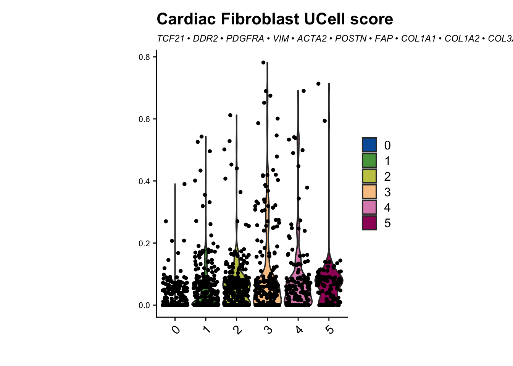
table(Macrophages$SCT_snn_res.0.8, Macrophages$orig.ident)
CMF_TGF CMFHM_NC CMFHM_TGF
0 9 282 138
1 1 180 137
2 3 146 137
3 11 94 117
4 2 74 63
5 3 54 524 Feature Plots
FeaturePlot_scCustom(Macrophages, features = "CD163", pt.size = 0, reduction = "umap") +
theme(axis.title.x = element_blank()) # Macrophage marker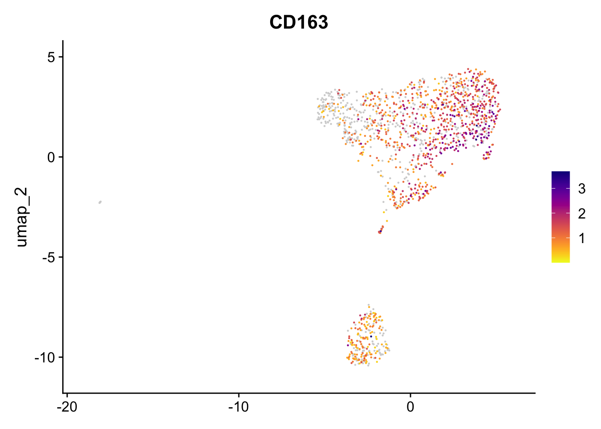
FeaturePlot_scCustom(Macrophages, features = "FAP", pt.size = 0, reduction = "umap") +
theme(axis.title.x = element_blank()) # Activated Fibroblast Marker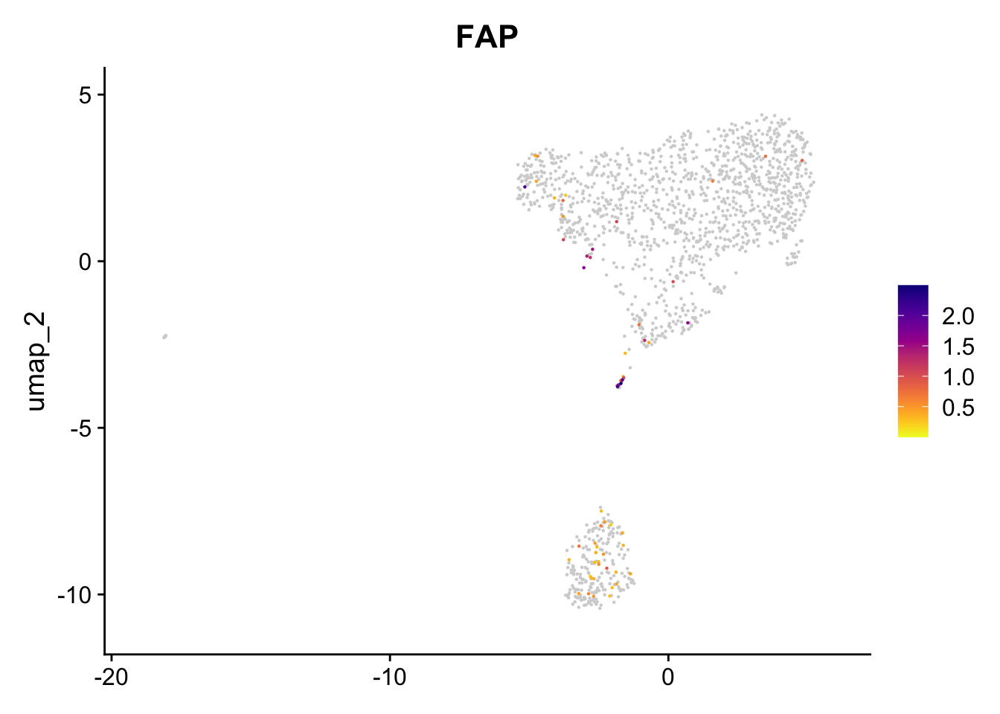
FeaturePlot_scCustom(Macrophages, features = "TTN", pt.size = 0, reduction = "umap") +
theme(axis.title.x = element_blank()) # Cardiomyocyte marker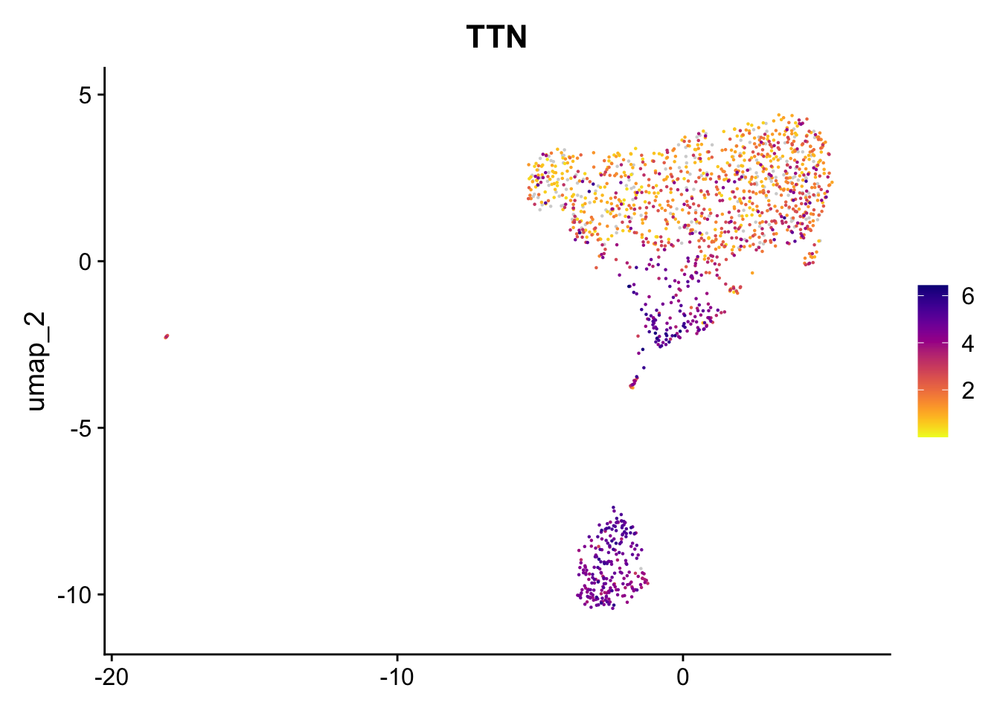
## --> assumption = Cluster 3 is Cardiomyocyte and Fibroblast doublets?
DimPlot(Macrophages, reduction = "umap", shuffle = T,
group.by = "Phase")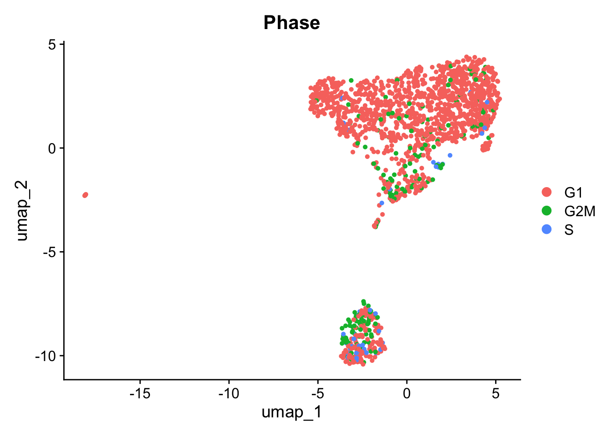
DimPlot(Macrophages, reduction = "umap", shuffle = T,
group.by = "orig.ident")
DimPlot(Macrophages, reduction = "umap", shuffle = T,
group.by = "SCT_snn_res.0.8")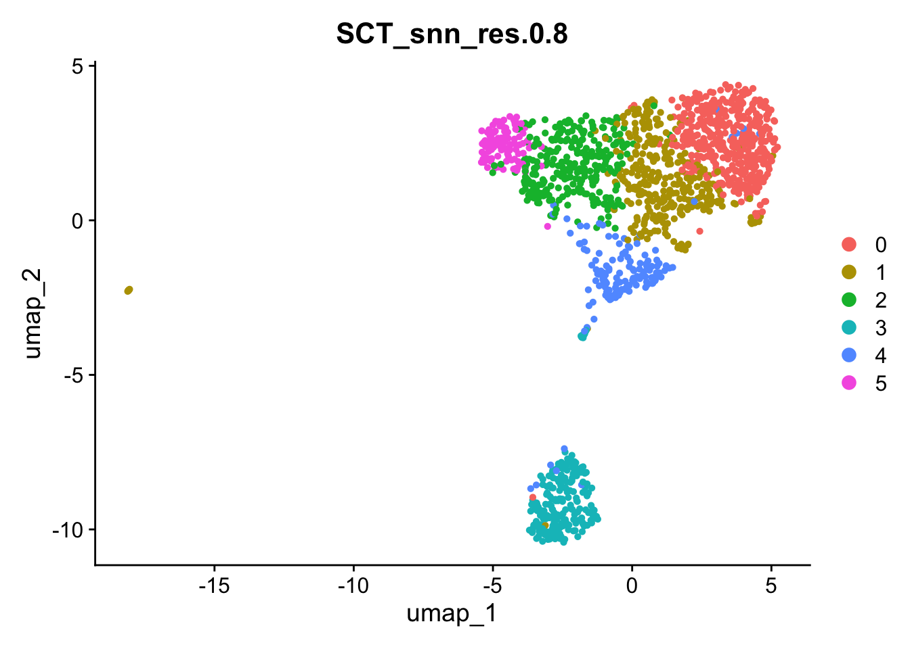
5 cleanup.
doublet_clusters <- c("3", "4")
doublet_cells <- colnames(subset(Macrophages, idents = doublet_clusters))
cmf_samples <- c("CMF_TGF", "CMF_NC")
cmf_cells <- colnames(subset(Macrophages, subset = orig.ident %in% cmf_samples))
cells_to_remove <- unique(c(doublet_cells, cmf_cells))
length(cells_to_remove)[1] 377valid_cells <- setdiff(colnames(Data), cells_to_remove)
Data_clean <- subset(Data, cells = valid_cells)
# # Overwrite data file
# saveRDS(Data_clean, file = "/Users/sophiewagner/Desktop/USZ 25:26/Gabi_Project_Setup/Laila_MT_Project/Laila_MT_Project/RDS_Files/Post_Annotation.rds")
sessionInfo()R version 4.6.0 (2026-04-24)
Platform: aarch64-apple-darwin23
Running under: macOS Sequoia 15.7.7
Matrix products: default
BLAS: /Library/Frameworks/R.framework/Versions/4.6/Resources/lib/libRblas.0.dylib
LAPACK: /Library/Frameworks/R.framework/Versions/4.6/Resources/lib/libRlapack.dylib; LAPACK version 3.12.1
locale:
[1] en_US.UTF-8/en_US.UTF-8/en_US.UTF-8/C/en_US.UTF-8/en_US.UTF-8
time zone: Europe/Zurich
tzcode source: internal
attached base packages:
[1] stats4 stats graphics grDevices utils datasets methods
[8] base
other attached packages:
[1] future_1.70.0 ggrain_0.1.2
[3] enrichplot_1.32.0 ggforce_0.5.0
[5] DT_0.34.0 UCell_2.16.0
[7] assertthat_0.2.1 SCpubr_3.0.1
[9] forcats_1.0.1 fgsea_1.38.0
[11] DOSE_4.6.0 GO.db_3.23.1
[13] org.Hs.eg.db_3.23.1 AnnotationDbi_1.74.0
[15] clusterProfiler_4.20.0 ggtangle_0.1.2
[17] ggarchery_0.4.4 EnhancedVolcano_1.30.0
[19] tibble_3.3.1 MAST_1.38.0
[21] speckle_1.12.0 harmony_2.0.5
[23] Rcpp_1.1.1-1.1 clustree_0.5.1
[25] ggraph_2.2.2 scDblFinder_1.26.2
[27] SingleCellExperiment_1.34.0 SummarizedExperiment_1.42.0
[29] Biobase_2.72.0 GenomicRanges_1.64.0
[31] Seqinfo_1.2.0 IRanges_2.46.0
[33] S4Vectors_0.50.1 BiocGenerics_0.58.1
[35] generics_0.1.4 MatrixGenerics_1.24.0
[37] matrixStats_1.5.0 ggrepel_0.9.8
[39] cowplot_1.2.0 patchwork_1.3.2
[41] scCustomize_3.3.0 hdf5r_1.3.12
[43] Seurat_5.5.0 SeuratObject_5.4.0
[45] sp_2.2-1 ggplot2_4.0.3
[47] dplyr_1.2.1 readr_2.2.0
[49] workflowr_1.7.2
loaded via a namespace (and not attached):
[1] ggpp_0.6.1 goftest_1.2-3
[3] Biostrings_2.80.1 vctrs_0.7.3
[5] spatstat.random_3.5-0 digest_0.6.39
[7] png_0.1-9 shape_1.4.6.1
[9] git2r_0.36.2 deldir_2.0-4
[11] parallelly_1.47.0 fontLiberation_0.1.0
[13] MASS_7.3-65 reshape2_1.4.5
[15] qvalue_2.44.0 httpuv_1.6.17
[17] withr_3.0.3 ggrastr_1.0.2
[19] xfun_0.59 ggfun_0.2.0
[21] survival_3.8-6 memoise_2.0.1
[23] ggbeeswarm_0.7.3 gson_0.1.0
[25] janitor_2.2.1 systemfonts_1.3.2
[27] tidytree_0.4.7 zoo_1.8-15
[29] GlobalOptions_0.1.4 pbapply_1.7-4
[31] rematch2_2.1.2 KEGGREST_1.52.2
[33] promises_1.5.0 otel_0.2.0
[35] httr_1.4.8 restfulr_0.0.17
[37] globals_0.19.1 fitdistrplus_1.2-6
[39] rstudioapi_0.19.0 UCSC.utils_1.7.1
[41] miniUI_0.1.2 processx_3.9.0
[43] curl_7.1.0 ScaledMatrix_1.20.0
[45] polyclip_1.10-7 SparseArray_1.12.2
[47] xtable_1.8-8 stringr_1.6.0
[49] evaluate_1.0.5 S4Arrays_1.12.0
[51] hms_1.1.4 irlba_2.3.7
[53] colorspace_2.1-2 polynom_1.4-1
[55] ROCR_1.0-12 reticulate_1.46.0
[57] spatstat.data_3.1-9 magrittr_2.0.5
[59] lmtest_0.9-40 snakecase_0.11.1
[61] glmGamPoi_1.24.0 later_1.4.8
[63] viridis_0.6.5 ggtree_4.2.0
[65] lattice_0.22-9 spatstat.geom_3.8-1
[67] future.apply_1.20.2 getPass_0.2-4
[69] scattermore_1.2 XML_3.99-0.23
[71] scuttle_1.22.0 RcppAnnoy_0.0.23
[73] pillar_1.11.1 nlme_3.1-169
[75] compiler_4.6.0 beachmat_2.28.0
[77] RSpectra_0.16-2 stringi_1.8.7
[79] tensor_1.5.1 lubridate_1.9.5
[81] GenomicAlignments_1.48.0 plyr_1.8.9
[83] crayon_1.5.3 abind_1.4-8
[85] BiocIO_1.22.0 scater_1.40.1
[87] gridGraphics_0.5-1 locfit_1.5-9.12
[89] graphlayouts_1.2.4 bit_4.6.0
[91] fastmatch_1.1-8 whisker_0.4.1
[93] codetools_0.2-20 BiocSingular_1.28.0
[95] crosstalk_1.2.2 bslib_0.11.0
[97] paletteer_1.7.0 plotly_4.12.0
[99] mime_0.13 splines_4.6.0
[101] circlize_0.4.18 fastDummies_1.7.6
[103] sparseMatrixStats_1.24.0 tidydr_0.0.6
[105] knitr_1.51 blob_1.3.0
[107] fs_2.1.0 checkmate_2.3.4
[109] listenv_1.0.0 DelayedMatrixStats_1.34.0
[111] ggplotify_0.1.3 Matrix_1.7-5
[113] callr_3.8.0 statmod_1.5.2
[115] tzdb_0.5.0 tweenr_2.0.3
[117] pkgconfig_2.0.3 tools_4.6.0
[119] cachem_1.1.0 RhpcBLASctl_0.23-42
[121] cigarillo_1.2.0 RSQLite_3.53.2
[123] viridisLite_0.4.3 DBI_1.3.0
[125] fastmap_1.2.0 rmarkdown_2.31
[127] scales_1.4.0 grid_4.6.0
[129] ica_1.0-3 Rsamtools_2.28.0
[131] sass_0.4.10 ggprism_1.0.7
[133] dotCall64_1.2 RANN_2.6.2
[135] farver_2.1.2 scatterpie_0.2.6
[137] tidygraph_1.3.1 yaml_2.3.12
[139] rtracklayer_1.72.0 cli_3.6.6
[141] purrr_1.2.2 lifecycle_1.0.5
[143] uwot_0.2.4 backports_1.5.1
[145] bluster_1.22.0 BiocParallel_1.46.0
[147] timechange_0.4.0 gtable_0.3.6
[149] rjson_0.2.23 ggridges_0.5.7
[151] progressr_0.19.0 ape_5.8-1
[153] parallel_4.6.0 limma_3.68.4
[155] enrichit_0.1.5 jsonlite_2.0.0
[157] edgeR_4.10.1 RcppHNSW_0.7.0
[159] bitops_1.0-9 bit64_4.8.2
[161] xgboost_3.2.1.1 Rtsne_0.17
[163] yulab.utils_0.2.4 spatstat.utils_3.2-3
[165] BiocNeighbors_2.6.0 aisdk_1.4.12
[167] jquerylib_0.1.4 metapod_1.20.0
[169] GOSemSim_2.38.0 dqrng_0.4.1
[171] spatstat.univar_3.2-0 lazyeval_0.2.3
[173] shiny_1.14.0 htmltools_0.5.9
[175] sctransform_0.4.3 rappdirs_0.3.4
[177] glue_1.8.1 spam_2.11-4
[179] httr2_1.2.3 XVector_0.52.0
[181] gdtools_0.5.1 RCurl_1.98-1.19
[183] treeio_1.36.1 rprojroot_2.1.1
[185] scran_1.40.0 gridExtra_2.3.1
[187] igraph_2.3.2 R6_2.6.1
[189] ggiraph_0.9.6 tidyr_1.3.2
[191] labeling_0.4.3 cluster_2.1.8.2
[193] aplot_0.3.0 GenomeInfoDb_1.48.0
[195] mcprogress_0.1.1 DelayedArray_0.38.2
[197] tidyselect_1.2.1 vipor_0.4.7
[199] fontBitstreamVera_0.1.1 rsvd_1.0.5
[201] KernSmooth_2.23-26 S7_0.2.2
[203] fontquiver_0.2.1 data.table_1.18.4
[205] htmlwidgets_1.6.4 RColorBrewer_1.1-3
[207] rlang_1.2.0 spatstat.sparse_3.2-0
[209] spatstat.explore_3.8-1 ggnewscale_0.5.2
[211] beeswarm_0.4.0